about us
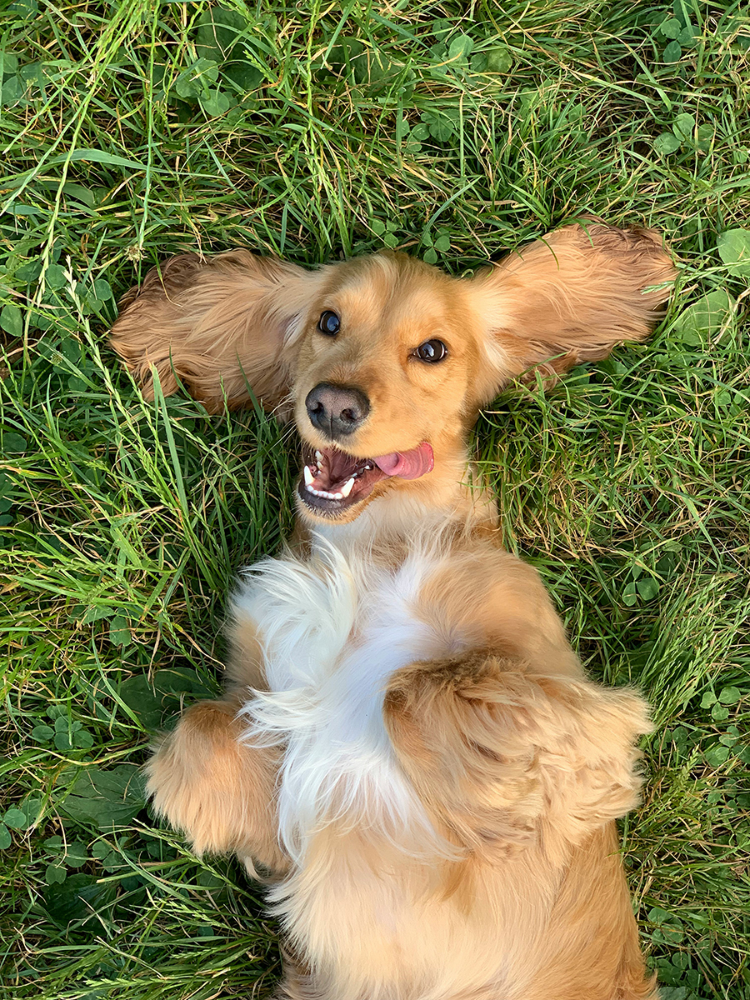
We Believe in
Our Buy With Confidence® promise comes from decades of experience crafting premium pet food. Because we believe every bowl of food should be tasty, nutritious and safe. 내추럴발란스는 미국의 딕 밴 패튼이 과학적인 근거에 의한 반려동물 사료를 추구하면서 시작되었습니다. 동물영양사와 수의학 박사들이 공통으로 개발한 이 반려동물 사료는 칼슘, 칼륨, 염소와 같은 무기염류들이 과잉 섭취되지 않도록 영양상태의 균형을 고려해 만들었습니다.shop
우리의 제품들은 고구마류, 콩류, 현미 같은 질 좋은 원료와 닭고기, 오리고기,
그리고 연어와 같은 고급 동물성 단백질들로 만들어집니다. view more
그리고 연어와 같은 고급 동물성 단백질들로 만들어집니다. view more

균형잡힌 영양과 맛있는 레시피를 개발하기 위해 검증된 성분만을 사용하고, 정직한 라벨링과 테스트를 실시하여 최적의 반려동물 영양 맞춤형 식단 솔루션을 제공합니다.
dog
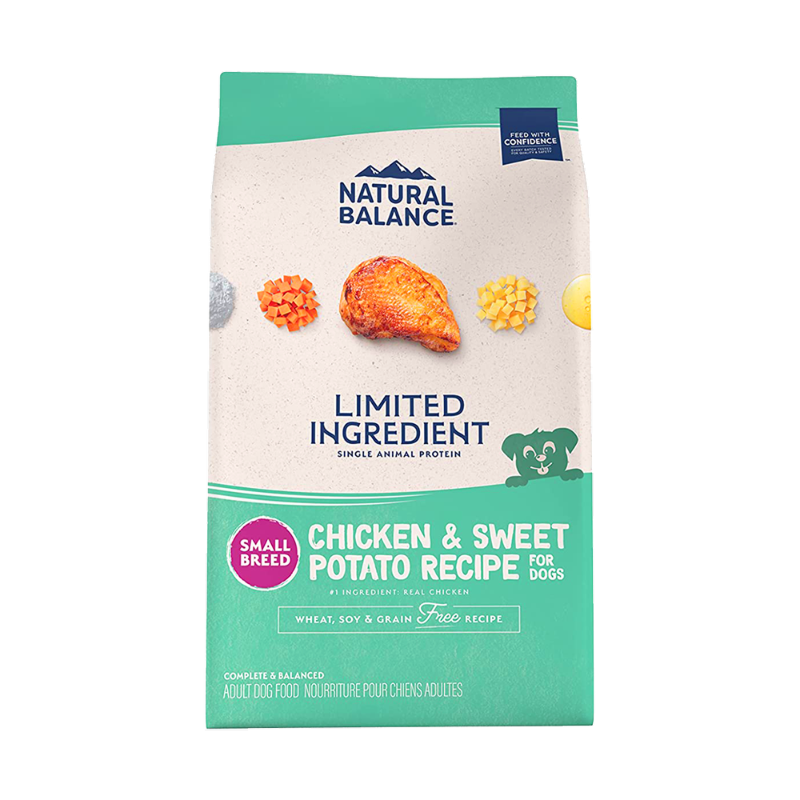
닭고기 & 고구마 레시피
강아지
닭고기 & 고구마 레시피
강아지
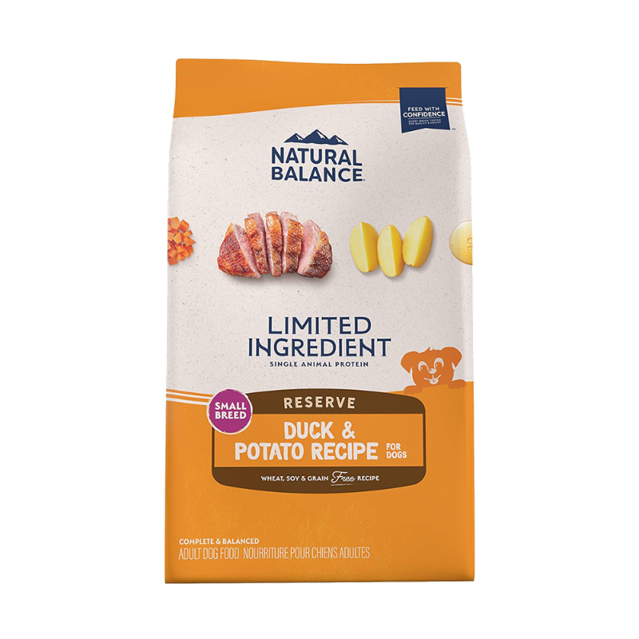
오리 & 감자 레시피
강아지
오리 & 감자 레시피
강아지
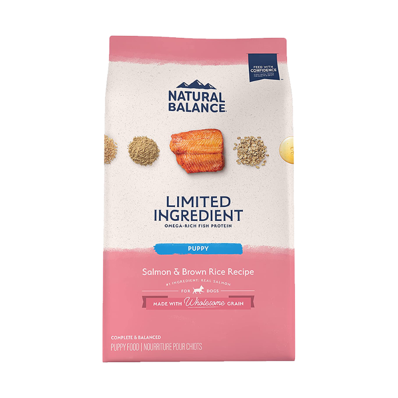
연어 & 현미 퍼피 레시피
강아지
연어 & 현미 퍼피 레시피
강아지
blue angels
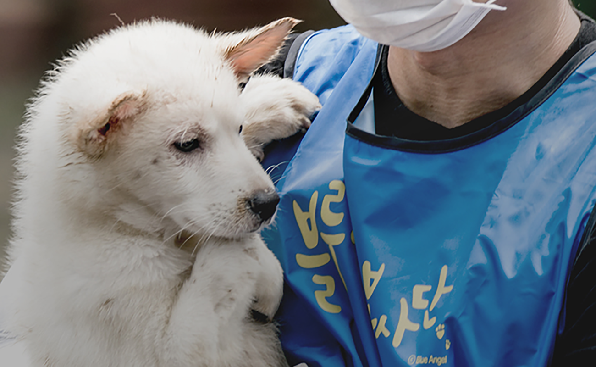
동물을 통해 얻은 이익은 다시 동물에게 되돌려줘야하며 특히 어렵고 힘든 곳이 있다면 지원을 아끼지 말아야 한다
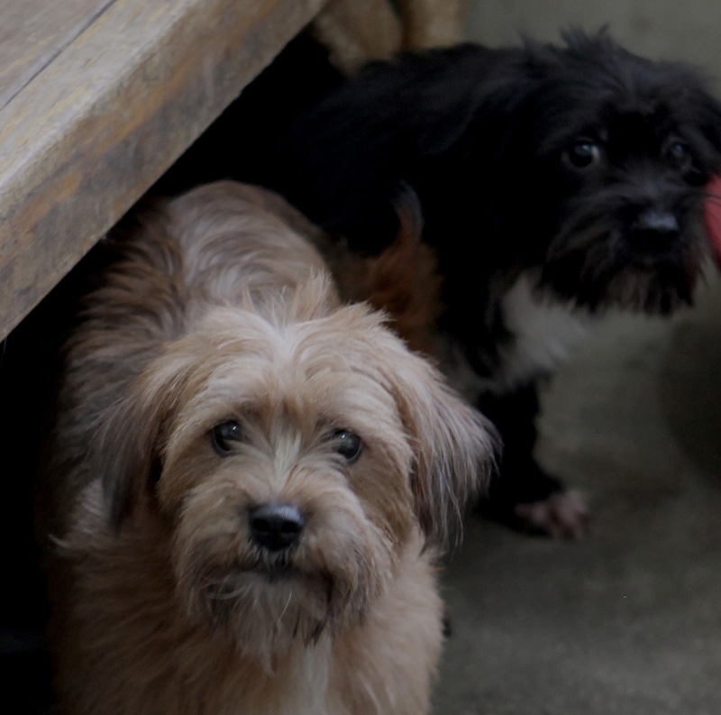
SPREAD LOVE WITH NATURAL BALANCE KOREA!
회사 설립 후 10여년동안 매년 어려운 곳에 지원과 기부를 하였으나 많은 도움을 주지 못한 것 같아 마음이 항상 무거웠습니다. 이제는 지원이나 기부도 구준히 실천하되 임직원들과 어려운 곳을 직접 찾아가 봉사를 실천하는 것 또한 더 의미있는 일이라 믿고 있습니다.
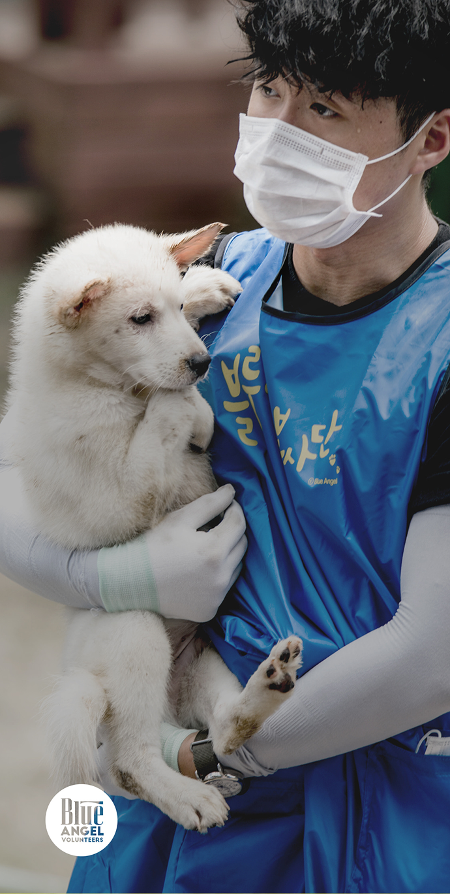
블루엔젤 봉사단은 2013년 5월부터 시작하여, 내추럴발란스코리아와 관계가 깊은연예인, 협력기업, 기관, 단체, 전문가들이 함께 어렵고 힘든 곳에 재능기부를 하는 봉사단입니다.
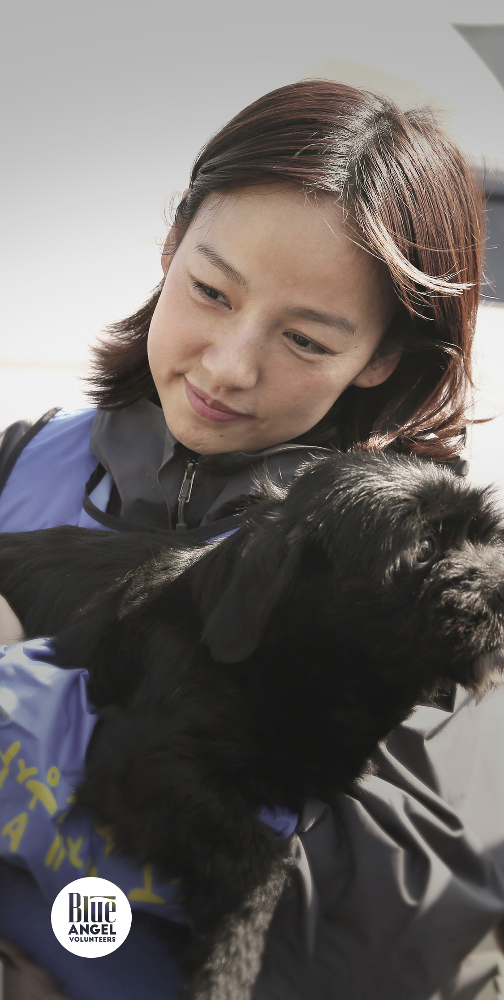
앞으로 내추럴발란스를 블루엔젤 봉사단은 매년 정기적으로 뜻 있는 분들과 봉사를 실천할 것이며 최선을 다할 것입니다.
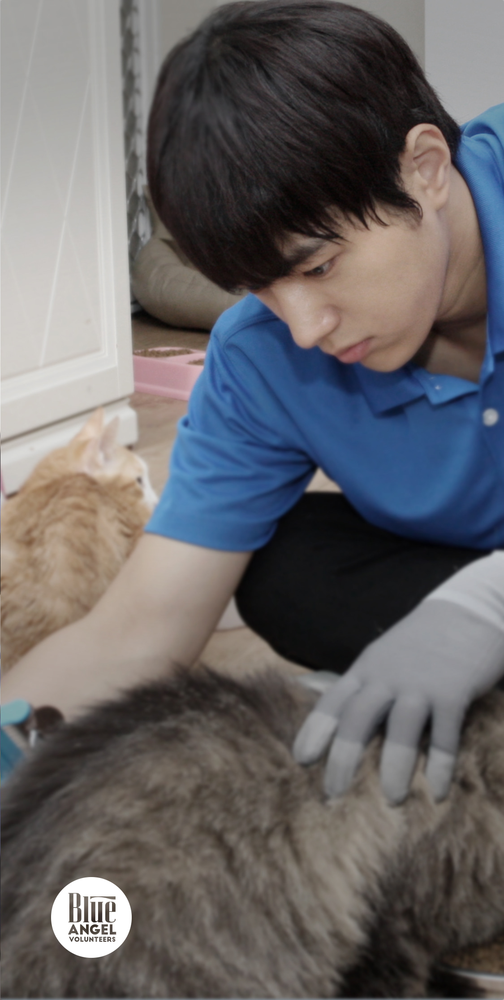
항상 응원해주시길 부탁드리며 동물사랑을 실천하고 앞장서는 아름다운 봉사단이 되겠습니다.
mascot
Blue
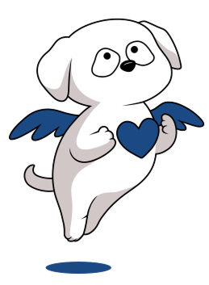
블루
Retriever
리트리버
다리를 다쳐 버림받은 블루는 주인을 기다리다 차에 치여 하늘나라로 떠나게 되고, 불쌍한 블루는 과거의 자신과 비슷한 처지의 유기동물들을 돕는 수호천사가 된다. 힘없는 동물들에게 생기를 나누어주기 위해 파란 하트를 가슴에 품고 다닌다.
Angel
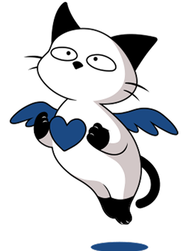
엔젤
Siamese Cat
샴 고양이
추운 겨울, 주인이 이사를 가면서 버림받아 골목에 홀로 남겨진 엔젤은 추위를 이기지 못하고 하늘나라로 떠난다. 그곳에서 블루와 만나 유기묘들을 돌보는 수호천사가 된다.
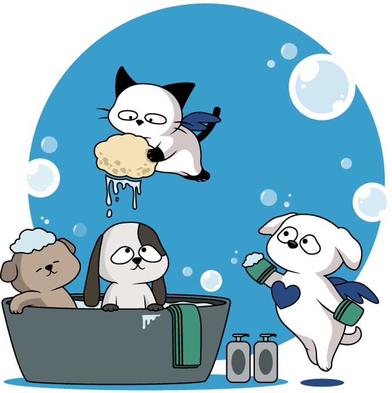
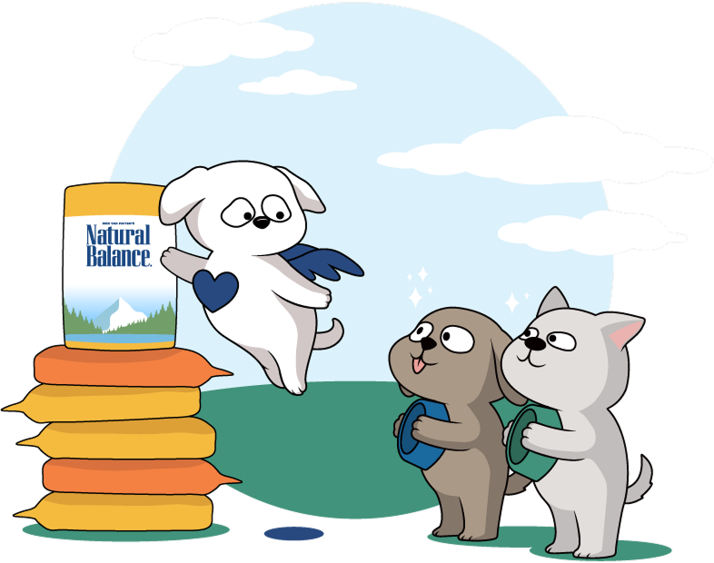
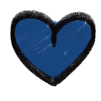